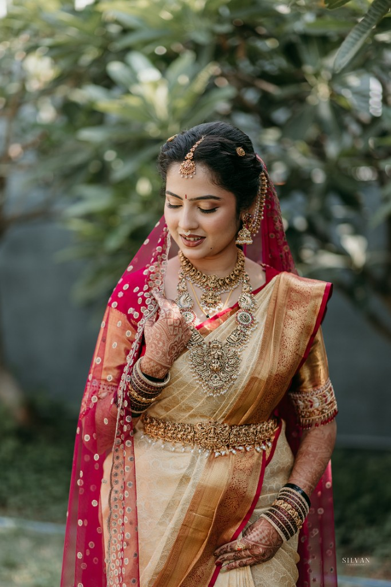
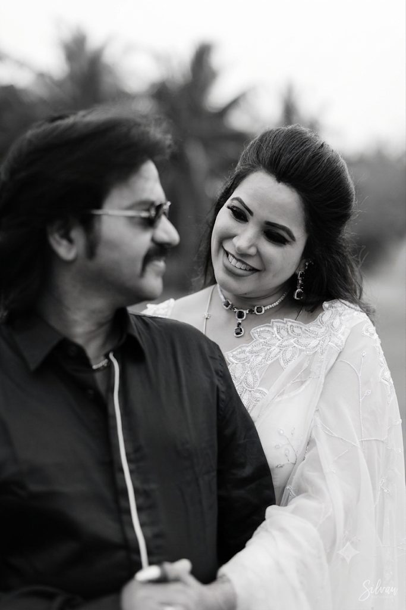
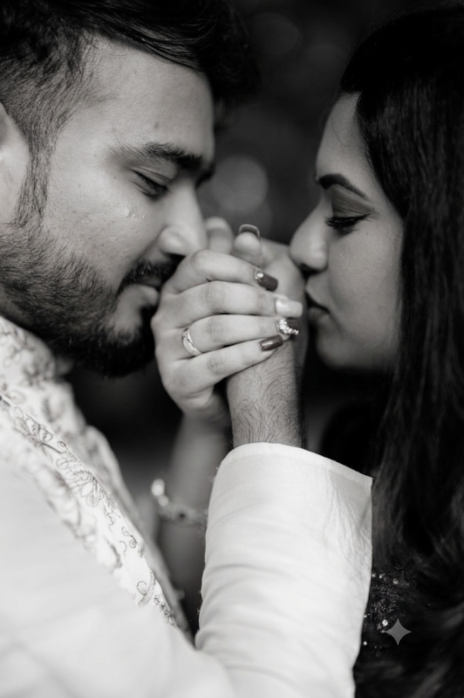
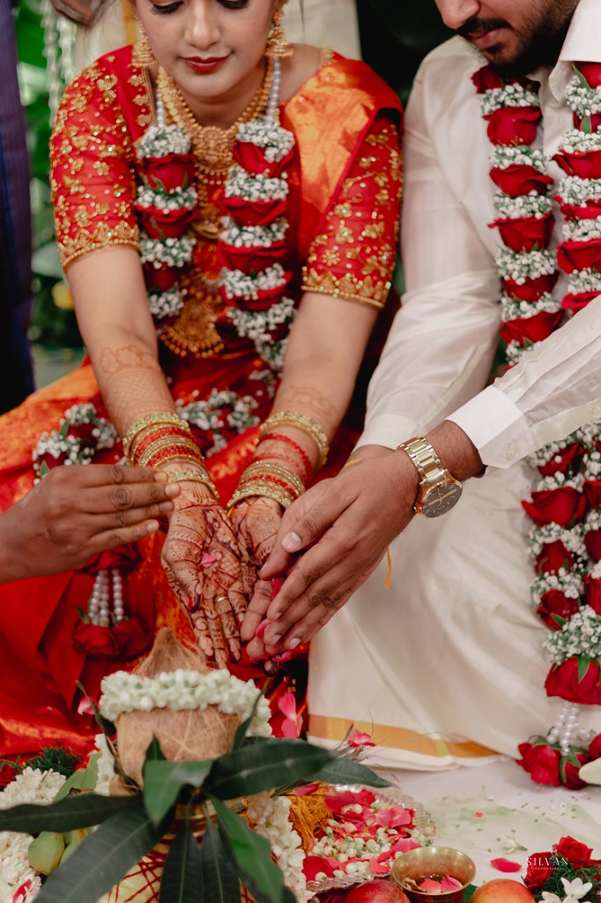
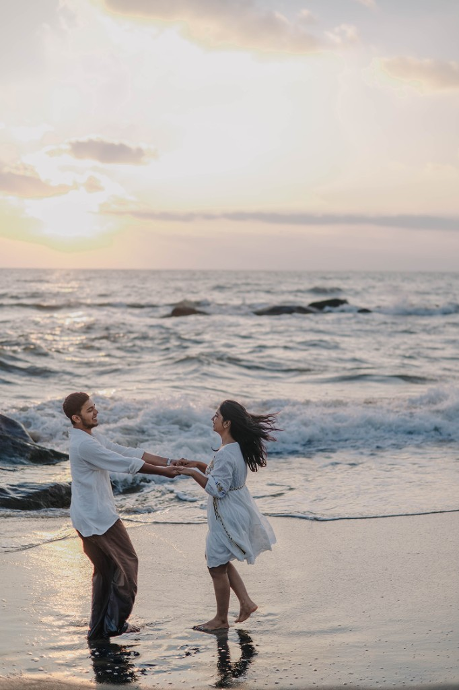

1. Connect & Discover
We start by getting to know each other. I want to hear your story, your plans, and about the people you love so I can capture your day in a way that feels like you.

From connection to images, a curated journey

We start by getting to know each other. I want to hear your story, your plans, and about the people you love so I can capture your day in a way that feels like you.

Next, we go over the schedule, locations, and any details you’re excited about. My goal is to make sure you feel confident and ready, so everything flows smoothly on the day.

On the day I focus on the moments as they happen, from celebrations to quiet interactions, and then deliver images that let you relive it all for years to come.
Working together is a collaborative, calm, and intentional process. I guide when needed, observe when it matters, and remain present throughout the entire day. From quiet moments to grand celebrations, my focus is on documenting your wedding with honesty, elegance, and care.
Most couples reserve their wedding photographer around 9–12 months in advance, especially during peak wedding season. The earlier you reach out, the better chance you’ll have to secure your date. I take a limited number of weddings each year to ensure every couple receives my full attention and care.
Yes, I travel for weddings and elopements anywhere in the world. I’ve photographed in cities like New York, London, and Barcelona, as well as in remote countryside venues and coastal destinations. I work with you to plan the day so that travel logistics are smooth and the photography fits with the timeline, locations, and flow of your celebration.
The number of images depends on the length of your wedding day or session. Typically, couples receive between 400 and 800 fully edited images for a full-day wedding, and smaller sessions include 100–250 images, depending on the time and type of session. All images are delivered in a beautifully curated online gallery, where you can download, share them with friends and family, or order prints.
I want your photos to reflect your vision and include everyone important to you. Before your wedding, I’ll send a short questionnaire so you can list must-have shots, family groupings, and special moments you want captured. On the day, I combine your requests with my creative approach to ensure everything is documented.

If my work resonates with you, I’d love to hear more about your plans. Share the details of your celebration, and we’ll explore how to create something beautiful together.
Contact me